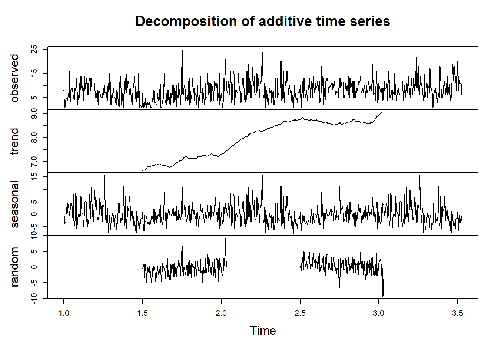

3 Capitulo 3: Preprocesamiento y visualización
A continuación se realizará un proceso esencial que nos permitirá definir y explicar los componentes fundamentales que componen nuestra serie a lo largo del tiempo, al separar la serie en sus partes constituyentes, como la tendencia, la estacionalidad y el componente residual, podremos comprender mejor los patrones y las variaciones presentes.
# Realizar descomposición de la serie de tiempo
serie_de_tiempo <- ts(datos_sumados$Calificación, frequency = 240)
descomposicion <- decompose(serie_de_tiempo)# Gráfico de la descomposición
plot(descomposicion)
Se procede a realizar una verificación muy necesaria para el análisis de nuestra serie de tiempo: la estacionalidad usaremoss la biblioteca “tseries” y su prueba de Dickey-Fuller aumentada (ADF) para determinar si nuestra serie de tiempo cumple con este requisito.
# Verificar estacionalidad
adf_test <- adf.test(datos_sumados$Calificación)## Warning in adf.test(datos_sumados$Calificación): p-value smaller than printed
## p-valueprint(adf_test)##
## Augmented Dickey-Fuller Test
##
## data: datos_sumados$Calificación
## Dickey-Fuller = -5.7059, Lag order = 8, p-value = 0.01
## alternative hypothesis: stationaryEl valor p (0.01 en este caso) es menor que el nivel comúnmente utilizado de 0.05, lo que indica que se rechaza la hipótesis nula. La hipótesis nula en este caso es que la serie de tiempo tiene una raíz unitaria y no es “estacionaria”, dado que el valor p es pequeño, se puede concluir que hay suficiente evidencia estadística para decir que la serie de tiempo es estacionaria en función de los resultados de la prueba ADF, gracias a la estacionariedad de la serie, evitaremos la necesidad de realizar diferenciación en este caso particular.